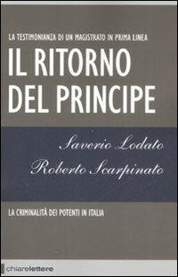
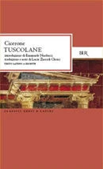
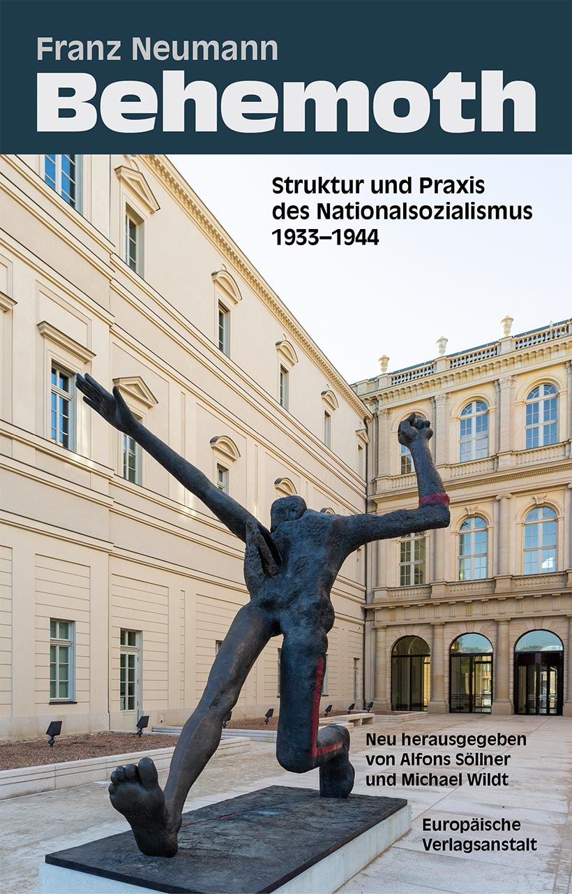
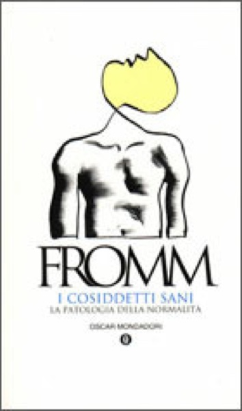
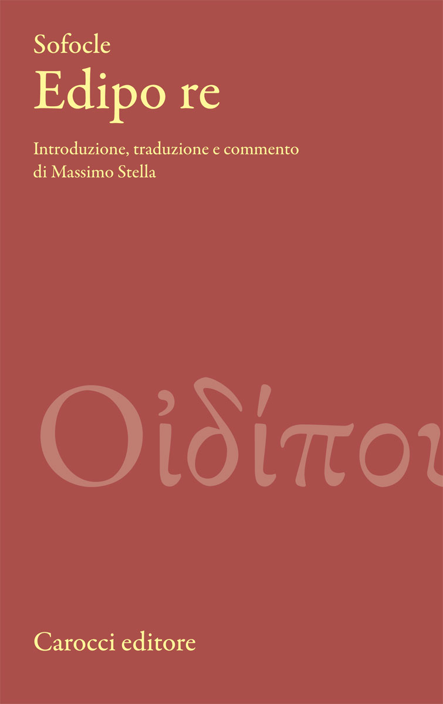

51:38 · 9 OPERE
Il ritorno del Principe.
Il filo del discorso
Il libro-intervista di Saverio Lodato e Roberto Scarpinato offre al relatore un percorso dalla criminalità mafiosa alle forme più generali del potere. I brani letti mettono in relazione menzogna pubblica, interessi privati e funzionamento dello Stato. L’immagine della corrida diventa una chiave per discutere la distrazione dell’attenzione: guardare il drappo anziché la mano che lo muove. Da qui il discorso si apre alla responsabilità degli intellettuali, alla differenza fra cultura e competenza tecnica e al ruolo della discussione nella vita democratica. La Costituzione occupa la seconda parte come limite al potere e come progetto che, nell’interpretazione proposta, non coincide automaticamente con i comportamenti della società. Il relatore collega queste pagine del2008 alle restrizioni sanitarie e alla politica contemporanea: sono applicazioni sue, da distinguere dal libro e da accertamenti giudiziari. La scheda conserva i passaggi su Andreotti, precisando la differenza fra prescrizione e assoluzione, e separa il testo costituzionale dalle valutazioni sul Presidente della Repubblica. La conclusione torna alle biblioteche, al dialogo e alla ricerca della verità, con i richiami a Platone e a Tiresia. Il filo conduttore è la cultura come capacità di riconoscere e interrogare il potere, senza assumere le invettive del contributo come diagnosi o prove di colpevolezza.
I libri nel discorso

Il ritorno del Principe. La criminalità dei potenti in Italia
Copertina: Chiarelettere,2008,collanaReverse,347p,ISBN9788861900561; prefazione di MarcoTravaglio nel record bibliotecario. Copertina autentica2008 dalla biblioteca comunale di Bologna. Il record BiblioToscana descrive una seconda edizione dello stesso anno; la prima pubblicazione2008 è distinta dalla ristampaTascabili2017 con nuova premessa,ISBN9788861909496.
Anno e opera espliciti; non è accertata la tiratura del volume mostrato. L’immagine non è una ricostruzione né la copertina della successiva edizione2017.
Titolo,autori,editore e2008 espliciti; lettura e commento dell’opera per l’intero contributo.
Passaggio 0:03 ↗ · Fonti e libro ↗
Ideologia e apparati ideologici di Stato (Note per una ricerca)
Copertina della raccolta contenente il saggio: Copertina della raccolta On Ideology, Verso / Radical Thinkers, 2020, 192 pagine, traduzione Ben Brewster. Contiene il saggio del 1970 e altri testi.
Copertina autentica Verso bianca e rossa, Louis Althusser e On Ideology leggibili. Non è la copertina del fascicolo La Pensée del 1970 né una edizione italiana del saggio; il volume non viene identificato come quello eventualmente mostrato.
Apparati ideologici dello Stato e Althusser riconoscibili nella ASR, a proposito della riproduzione culturale.
Passaggio 15:11 ↗ · Fonti e libro ↗
Tuscolane (Tusculanae disputationes)
Identificazione probabile
Copertina: BUR,8maggio1996,560p,ISBN9788817171007; introduzione di EmanueleNarducci,traduzione di LuciaZuccoliClerici. Copertina editoriale autentica; testo antico riscontrato sul latino, non attribuzione al filmato di questa edizione.
Immagine autentica dell’opera, controllata visivamente; l’edizione di riferimento non è attribuita al filmato.
Citazione di Cicerone su Socrate che porta la filosofia dal cielo alla terra; testo latino riscontrato in TusculanaeV10, titolo non pronunciato.
Passaggio 20:25 ↗ · Fonti e libro ↗
Behemoth. The Structure and Practice of National Socialism
Identificazione probabile
Copertina: Europäische Verlagsanstalt · edizione tedesca 1933–1944 · cura Söllner e Wildt
Immagine autentica dell’opera, controllata visivamente; l’edizione di riferimento non è attribuita al filmato.
Titolo Behemoth e analisi dello Stato nazionalsocialista: identificazione con Neumann,non con omonimiHobbes.
Passaggio 30:01 ↗ · Fonti e libro ↗
Giulio Cesare
Identificazione probabile
Copertina: Feltrinelli · Universale Economica I Classici · 2013
Copertina autentica dell’edizione di riferimento, non attribuita all’esemplare del video.
Allusione alla ragione fuggita fra le bestie, nel discorso di Antonio,attoIIIscena2.
Passaggio 29:43 ↗ · Fonti e libro ↗
I cosiddetti sani
Identificazione probabile
Copertina: Mondadori, 1997 · Oscar saggi
Fromm e formula tedesca sul carattere patologico dell’adattamento; collegamento probabile al tema dei Cosiddetti sani, non edizione o passo accertati.
Passaggio 33:44 ↗ · Fonti e libro ↗
Costituzione della Repubblica Italiana
Copertina dell’edizione Intra aggiornata al 2023: Intra · 2023 · introduzione di Umberto Vincenti
Copertina autentica del testo integrale, aggiornata alla legge costituzionale 26 settembre 2023 n.1. È successiva al filmato del 2019 e non rappresenta la versione storica letta dal relatore. Umberto Vincenti firma l’introduzione. I tentativi di acquisire PDF istituzionali hanno restituito HTTP 403: nessun PDF o frontespizio è simulato come scaricato.
Costituzione italiana esplicita e commentata nella seconda parte, in particolare limiti del potere e nomine.
Passaggio 36:16 ↗ · Fonti e libro ↗
La Repubblica
Identificazione probabile
Copertina: Laterza · La Repubblica · edizione con testo a fronte di riferimento
Immagine associata all’ISBN di riferimento e controllata visivamente; edizione e traduzione non identificate come quelle citate o lette nel video.
Platone,governo dei filosofi e mito della caverna richiamati nella conclusione.
Passaggio 48:14 ↗ · Fonti e libro ↗
Edipo re
Copertina: Carocci,Classici,febbraio2010,324p,ISBN9788843051472; introduzione,traduzione e commento di MassimoStella. Copertina autentica dell’editore, distinta dalla traduzione scenicaMorosi2022 e da altre edizioni. La traduzione utilizzata dal relatore non è identificata.
Immagine autentica dell’opera, controllata visivamente; l’edizione di riferimento non è attribuita al filmato.
Edipo re e Tiresia espliciti; frase conclusiva non localizzata come verso letterale.
Passaggio 50:25 ↗ · Fonti e libro ↗Minutaggi ricavati da testi automatici, da riascoltare. Le identificazioni probabili sono segnalate accanto ai libri.